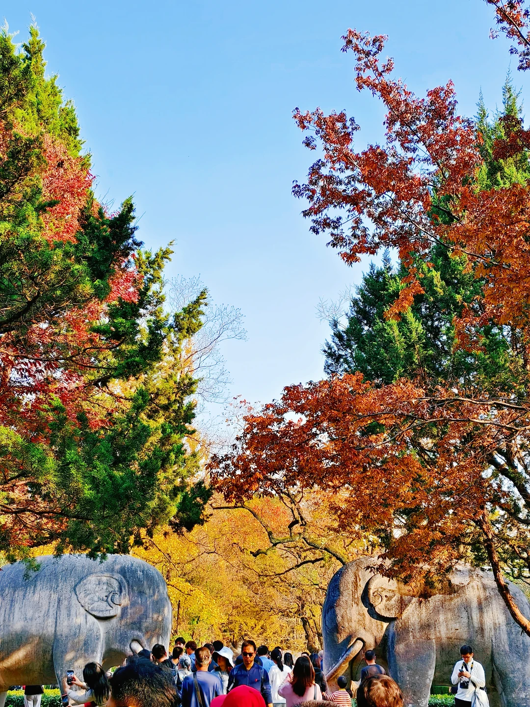

钟山，
赴一场秋日之约。
一份从锅贴香气开始的赏秋路线
湖光、石兽、小鹿与白鸽，按体力选路线。
YOUR AUTUMN FIELD GUIDE
少走回头路，多留一点时间看风景。
燕雀湖不必固定为第一站。按苜蓿园入口和景交车走向，这样串游更省步数；中山陵的登顶台阶单独选择。
THE ROUTE
在地图上，选一条顺路的走法
先看时间，再决定走多远
默认07:00南京站到达、李记早餐后，09:35到燕雀湖开始游玩。改这里仅调整景区时间；转场、午餐和离开时间分别列出。
以上已含表内候车、午餐、步行。周六另外预留30–60分钟机动；到地铁站不等于到南京站，返南京站另留约50–70分钟及进站缓冲。
玩到一半，继续还是结束
按“刚游完”判断；若正在这一站，把判断时刻填成预计离开这一站的时间。支持手动演算，不读取定位。
底图道路和湖岸来自 OpenStreetMap（WGS84）。彩色箭头表示游玩顺序，非逐路口导航；未核实的鹿苑、北园入口与机位只标大致范围。详情内有逐段走法、原作者实拍导览及地图搜索入口，现场跟随导览牌。
北园离哪里近？为什么适合替换，而不是最后加一站？
北园在西侧，接近明孝陵1号门／中山植物园公交站。美龄宫在石象路东南侧，中山陵和音乐台更靠东。主线从5号门向东，北园分支从1号门向西北，离园前就要决定方向。
B线以北园替换美龄宫并略过梧桐大道专门停拍，仍需从西侧重新接往中山陵；含午餐及接驳预留，时间随开始时间联动，具体见上方时间表；无法保证更省腿。C线游完北园就在西侧结束，省去向东往返。
若坚持四景＋北园全部保留，需再加约1.5–2小时；不作为本次半天到多半天的默认方案。北园独立购票，不在钟山四景联票内。
没有找到这个机位。试试“红叶”“石象路”或“音乐台”。
GETTING THERE
从出站到返程，每一段都算进去
BEFORE YOU GO
票务、预算与随身清单
门票怎么买
在微信搜索“钟山风景区”，核对官方运营主体后购票预约。本手帖不售票。
装进口袋的准备
燕雀湖拍杉林倒影，石象路找红黄树色。湖畔“红杉”并非枫叶，历史全红照片不代表本周叶色。
省力调整、雨天方案与照片说明
READ & VERIFY
这些路线与机位，从哪里查到
核查于2026年11月10日。官方票务与接驳优先；视频和游记用于找路线、机位。点开原文可继续查看实景。